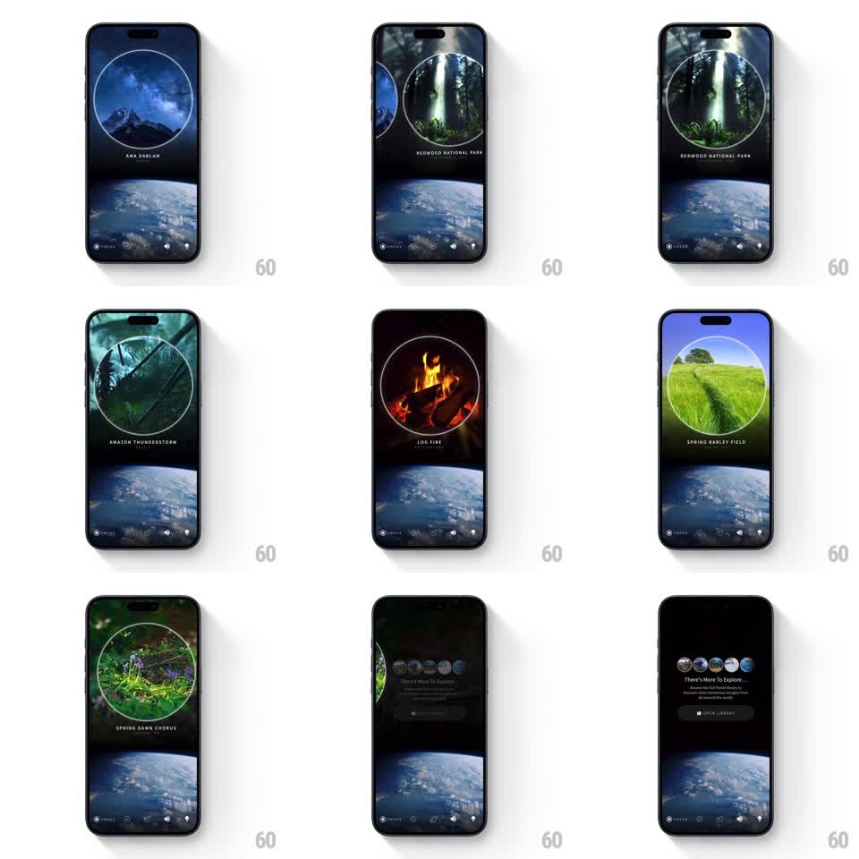

Media
Frame-by-frame

Rebuild this interaction 1:1: Portal's sound-scene swipe - a horizontal drag slides between circular ambient scene portals with spring physics while the scene name and background crossfade.

Rebuild this interaction 1:1: Portal's sound-scene swipe - a horizontal drag slides between circular ambient scene portals with spring physics while the scene name and background crossfade. ## Integration Integration: stack-agnostic spec - springs given as stiffness/damping, timed motions as duration + curve; map every value to your framework and animation library of choice. ## Scene Full-bleed dark scenes from the Portal app: a circular video portal centered on screen showing nature footage (mountain night sky, redwood forest, amazon storm, log fire, barley field, dawn chorus) with the scene name in spaced caps below it, an earth-from-space band lower on the screen, and a minimal control row at the bottom. The final position shows a "There's More To Explore" library card with scene thumbnails. ## Motion spec Pattern: swipeable circular pager, ~700ms per swipe. - On drag, the current circular portal follows the finger (translateX coupled 1:1) while the next portal slides in from the drag direction, already inside its own circle mask. - On release, the pager springs to the nearest scene (stiffness 280 damping 24), the outgoing portal exiting fully. - The full-bleed background crossfades to the new scene's palette (400ms) and the scene name fades out and in (200ms each) with a small vertical drift (8px). - Past the last scene, the pager settles on the library card with the same spring. - The control row stays fixed at the bottom throughout. ## Calibration - The circle masks stay perfectly round during the swipe - the mask does not deform with velocity. - Background crossfade lags the portal motion slightly (100ms), so the scene leads and the mood follows. ## Reduced motion Scenes crossfade in place. ## Don't miss - Scene names use wide letter-spaced caps with a small location line beneath. - The earth band at the bottom persists across scenes - it anchors the layout.